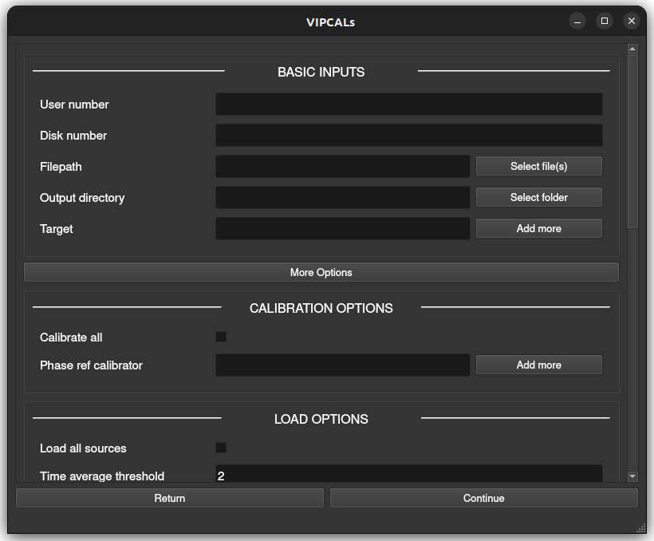
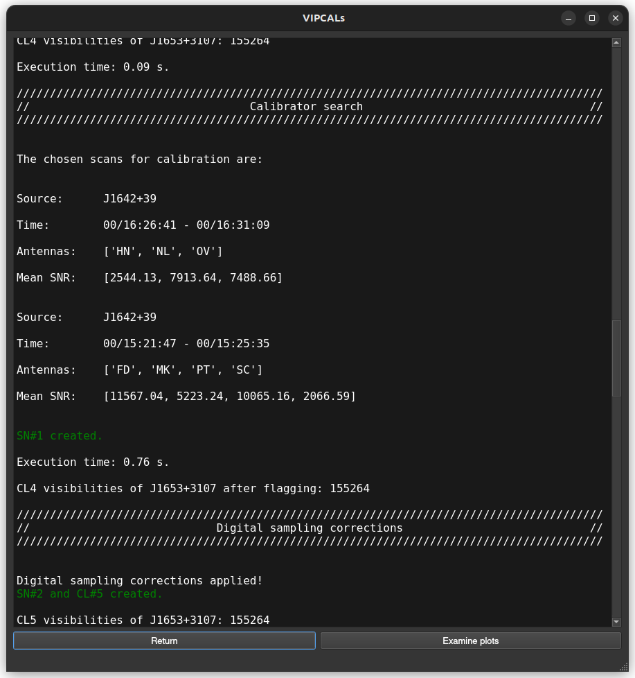
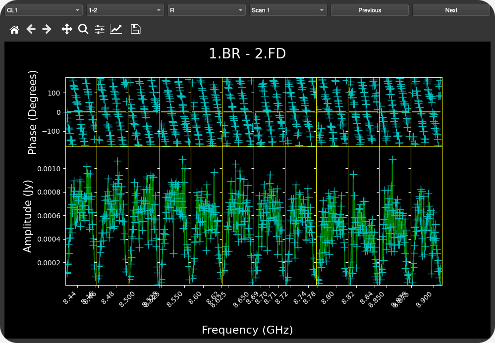
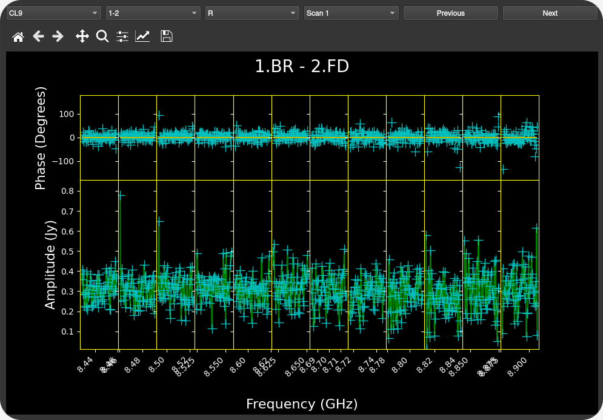

Usage
Upon opening the pipeline, you will be presented with two modes:
Manual Input
{kind=link}
This mode allows calibration of a single observation (which may include multiple files) and lets you inspect the results via interactive plots. Below is a description of the different parameters that can be used, both compulsory and optional.
Minimum Required Inputs
User number: AIPS user number (manual installation only)
Disk number: AIPS disk number (manual installation only)
Filepath: file(s) to calibrate
Output directory: directory for output products
Target: name(s) of science target(s) to calibrate
Additional Options
Calibration Options
Calibrate all: calibrate all sources (default: only science target(s))
Phase ref calibrator: define specific source(s) to use as phase reference calibrator(s)
Loading Options
Load all sources: load all sources (default: only science target(s) + 3 tentative calibrators)
Load amp. calibration tables: load external tables with system temperatures and gain curves in AIPS ANTAB format.
Time average threshold: minimum integration time in seconds. If the data have a shorter time sampling, it will be averaged in time up to this value (0 to disable)
Freq. average threshold: minimum channel width in kHz. If the data have narrower channels, they will be averaged in frequency up to this value (0 to disable)
Phase center shift: give coordinates to shift the phase center of each target if more accurate positions are available. Format:
"175.858625 18.577322"or"11h43m26.07s +18d34m38.36s"
Reference Antenna Options
Reference antenna: fixed reference antenna (e.g., “LA”)
Priority antennas: list of preferred antennas to be used as reference antenna (e.g., “LA”, “FD”, “EF”)
Search central antennas: prioritize central array antennas (VLBA only)
Maximum scans: maximum number of scans per source to use in the automatic reference antenna search (default: 10)
Fringe Fit Options
Signal-to-noise threshold: minimum SNR accepted during the FFT step of the fringe fit on the science target
Fixed solution interval: fixed solution interval in minutes
Minimum solution interval: minimum allowed interval (in minutes) when searching for the optimal solution interval
Maximum solution interval: maximum allowed interval (in minutes) when searching for the optimal solution interval
Export Options
Channel out:
SINGLE: before exporting, average in frequency to 1 channel per IF
MULTI: export all channels
Edge flagging: when exporting:
If < 1: flag that fraction of edge channels at the beginning/end of each IF
If ≥ 1 and integer: flag that number of edge channels at the beginning/end of each IF
Plotting Options
Interactive plots: enable GUI plots (manual mode only)
Warning
Generating these plots can consume lots of time and disk storage. It is advised to disable them for large datasets. Static .ps and .pdf plots are always saved in the output directory.
Pipeline log
During the pipeline run, real time information is displayed in the GUI. All this information will be also available as a text file after the calibration.
{kind=link}
Interactive plots
After a successful pipeline run, the user is given the option to display some diagnostic plots. The available plots are
Amplitude and phase vs Frequency
Calibrated amplitude and phase vs Time
Calibrated amplitude and phase vs uv-distance
uv coverage
These plots are grouped by source and frequency band.


{kind=link}

{kind=link}
Warning
The interactive plots are under active development and still present some small bugs, especially when there is no data available for multiple baselines.
JSON Input
For batch processing, inputs can be supplied via a JSON file. All parameters mirror the manual input described above. As before, when running in Docker, both userno and disk should be omitted.
Minimum JSON Fields
Key |
Type |
|---|---|
userno |
int |
disk |
int |
paths |
list of str |
targets |
list of str |
output_directory |
str |
Optional JSON Fields
Key |
Type |
|---|---|
calib_all |
bool |
phase_ref |
list of str |
load_all |
bool |
load_tables |
str |
time_aver |
float |
freq_aver |
float |
shifts |
list of str |
refant |
str |
refant_list |
list of str |
search_central |
bool |
max_scan_refant_search |
float |
fringe_snr |
float |
solint |
float |
min_solint |
float |
max_solint |
float |
channel_out |
str (“SINGLE” or “MULTI”) |
flag_edge |
float |
Examples
Below you can find some examples of typical JSON files that can be given to VIPCALs
{
"userno": 4,
"disk": 9,
"paths": [
"/data/pipeline_test_sample/diego/BR235/BR235M/VLBA_BR235M_br235m_BIN0_SRC0_0_210726T164755.idifits"
],
"targets": ["1611+179", "1428+254", "1443+188"],
"output_directory": "/home/dalvarez/vipcals/vipcals/101_200",
"refant_list": ["LA", "FD"]
}
{
"userno": 4,
"disk": 9,
"paths": [
"/data/pipeline_test_sample/felix/BR235/BR235O/VLBA_BR235O_br235o_BIN0_SRC0_0_210217T213934.idifits"
],
"targets": ["0912+237"],
"output_directory": "/home/dalvarez/vipcals/vipcals/101_200",
"shifts": ["138.72500917 23.53151889"]
}
Note that sources and coordinates in the “phase_ref” and “shifts” fields have to be given in the same order as the sources in the “targets” field. If there is any source where those options should not apply, then it can be skipped by giving a null value:
{
"userno": 4,
"disk": 9,
"paths": [
"/data/pipeline_test_sample/felix/BR235/BR235O/VLBA_BR235O_br235o_BIN0_SRC0_0_210217T213934.idifits"
],
"targets": ["0737+171", "0912+237"],
"phase_ref": ["0740+155", null],
"output_directory": "/home/dalvarez/vipcals/vipcals/101_200",
"shifts": [null, "138.72500917 23.53151889"]
}
Outputs
Below is a representative structure of the output directory produced by the pipeline:
EA075/
├── J1159+2914_EA075_22G_2024-03-13/
│ ├── PLOTS/
│ │ ├ 1159+2914_EA075_22G_2024-03-13_CL1_POSSM.ps
│ │ ├ 1159+2914_EA075_22G_2024-03-13_CL9_POSSM.ps
│ │ ├ 1159+2914_EA075_22G_2024-03-13_TSYS_TY1.ps
│ │ ├ 1159+2914_EA075_22G_2024-03-13_TSYS_TY2.ps
│ │ ├ 1159+2914_EA075_22G_2024-03-13_UVPLT.ps
│ │ ├ 1159+2914_EA075_22G_2024-03-13_VPLOT.ps
│ │ ├ 1159+2914_EA075_22G_2024-03-13_RADPLOT.pdf
│ │
│ ├── TABLES/
│ │ ├ flags.vlba
│ │ ├ gaincurves.vlba
│ │ ├ tsys.vlba
│ │ ├ 1159+2914_EA075_22G_2024-03-13.caltab.uvfits
│ │
│ ├ 1159+2914_EA075_22G_2024-03-13.stats.csv
│ ├ 1159+2914_EA075_22G_2024-03-13.uvfits
│ ├ 1159+2914_EA075_22G_2024-03-13_AIPSlog.txt
│ ├ 1159+2914_EA075_22G_2024-03-13_scansum.txt
│ ├ 1159+2914_EA075_22G_2024-03-13_VIPCALslog.txt
│
│
├── J1143+1834_EA075_22G_2024-03-13/
│ ├──
: :
: :
For each calibrated source, there is a directory that contains:
*.stats.csv: metadata on the observation and the calibration process in csv format
*.uvfits: calibrated fits file
*_AIPSlog.txt: output produced by AIPS after each step
*_scansum.txt: summary of the observation including scan list and frequency setup
*_VIPCALslog.txt: human-readable summary of the calibration produced by VIPCALs
The pipeline also generates the following plots inside the /PLOTS/ folder:
*_CL1_POSSM.ps: uncalibrated visibilities vs frequency
*_CL9_POSSM.ps: calibrated visibilities vs frequency
*_TSYS_TY1.ps: original antenna system temperatures vs time
*_TSYS_TY2.ps: smoothed antenna system temperatures vs time
*_UVPLT.ps: UV coverage of the calibrated observation
*_VPLOT.ps: calibrated visibilities vs time
*_RADPLOT.pdf: calibrated visibilities vs uv-distance
and the following tables in the /TABLES/ folder:
flags.vlba: initial flags of the observation (if not included in the file)
gaincurves.vlba: gain curves of each antenna (if not included in the file)
tsys.vlba: antenna system temperatures (if not included in the file)
*.caltab.uvfits: AIPS tables used during the calibration